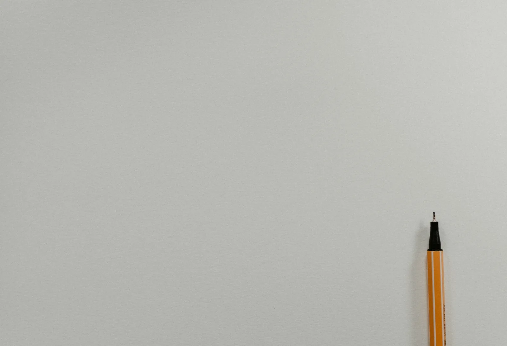
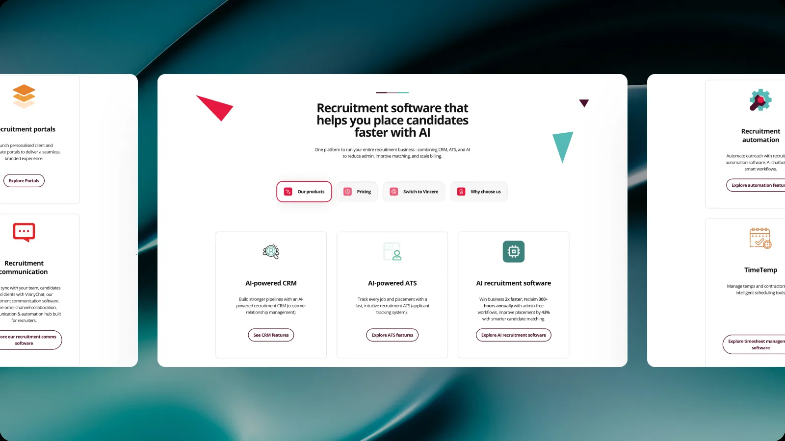

Vincere: Five Years Designing a Recruitment OS
Vincere is a B2B recruitment platform used by agencies in Australia, the UK, Europe and Japan. I spent five years there as a product designer, in a team of four that owned every screen and the design system behind them. This is how that work was done, from two-week sprints in Figma to designing directly in the product's codebase.

I joined Vincere in August 2021 as a product designer and stayed until June 2026. The product is a B2B SaaS platform for recruitment agencies and headhunting firms, most of them in Australia, the UK, Europe and Japan. The web app is what people use every day, with mobile apps alongside it.
The design team was three people for my first two years, two product designers and a lead, and four after that. Between us we covered all of the UI and UX across the platform, the design system behind it, and the occasional landing page. Day to day we worked with the product managers, the Head of Product, engineering and QA.
The toolset across those five years: Figma and FigJam for the design work, Jira and Azure DevOps Boards for tickets, and from 2025 Claude for research, documentation and building.

Vincere is positioned as a Recruitment OS. It is not one app but an ecosystem, with more than ten smaller products inside it serving recruiters, admins, contacts and candidates. Its surface is wide enough that no one person on the team knew all of it.
The interfaces are data-dense by nature. Tables, charts, statistics, and flows with a lot of branches. Every view, every screen and every dropdown carries a large amount of information, options and settings.
That density is deliberate. The product direction was to give customers as much choice and as much customisation as possible, so that one platform could fit very different ways of running an agency. It sets a design constraint that runs against most general advice.
The job was rarely to remove options. It was to make a screen full of them stay usable.

From 2021 until the middle of 2025 the team ran two-week Agile sprints, and a ticket followed the same path every time.
A product manager wrote the ticket for the feature or update that needed design. The lead designer assigned it across the team. I read it and, where anything was unclear, booked time with the product manager before drawing anything, since customer contact sat with product rather than with design. That conversation was the difference between a design that answered the real request and one that had to be redone after review.
The thinking then happened in FigJam: user flows, wireframes, and a few possible solutions side by side. Only after that came Figma, for the mockups, the prototype and the components behind them. A review with the lead designer, then a review with the product manager, then handoff to engineering.

A platform this wide cannot stay consistent by hand, and four designers cannot draw more than ten products into agreement one screen at a time. The design system was the work that made the rest of the work possible.
The four of us built and maintained it in Figma: close to a thousand components, screens, libraries and views, covering more than ten products inside the platform. Every product drew from the same source, so a pattern solved once stayed solved.
It is also where my Figma craft comes from. Variables for colour, spacing and type. Styles, components, variants and properties for anything used more than once. Strict Auto-Layout, so a component holds its shape against long labels and real data. File organisation another designer can navigate without asking, and plugins to take the repetition out of the rest.

Sitting next to developers and testers taught me the other half of the job. I picked up enough HTML, CSS and React to understand how the product was built, how the code was organised, and which design decisions were expensive to implement. I learned where performance and data fetching set the real limits on an interface.
That shaped how I hand off. I know what a developer needs before they can start, so a handoff carries the states, the edge cases and the flow in one place rather than a screen and a conversation.

In June 2025 The Access Group began bringing its products together into a single ecosystem, Access Evo. The design team's remit widened with it. Alongside Vincere we took on work from other products in the group.
That meant picking up unfamiliar domains quickly and designing for teams whose conventions were not ours. The design system experience carried over directly, because merging separate products into one ecosystem is a consistency problem before it is anything else.

From January 2026 until I left in June, the design step moved out of Figma and into the product itself. Instead of mockups, we built working micro-frontends.
The loop was short. I worked with the product manager and Claude to build a micro-frontend inside the team's own repository on Azure DevOps. Once there were working versions, we reviewed them with the lead designer and the product manager. When the micro-frontend was agreed, a developer took it to production.
The work varied. Some tickets were UI and UX improvements with no change to the flow or the business rules. Some were an entirely new feature or product. Some carried an existing Vincere feature across into the new ecosystem, and some were refining a prototype a product manager or a stakeholder had already built.
A review moves faster when the thing being reviewed is real.

Working that way depended on a year of preparation. AI was introduced across every role in August 2025, with training on how to use it well, which is when I got my own Claude account. Within about ten months it had moved through most of my work: research, generating design directions, writing documentation, building prototypes, and testing whether a flow holds up.
Building inside a real repository gave me the vocabulary that goes with it. Branches, pull requests, merges, pushes and pulls. I understand how a digital product is built and released, not only how it is drawn.

Five years on one platform taught me to work with complexity instead of against it. On a product sold on how much it can be configured, the goal is not a simpler screen. It is a dense screen that stays legible and predictable.
The design system taught me that consistency is infrastructure. Four designers covered more than ten products because the decisions were made once and kept somewhere everyone could reach.
And the last year taught me not to attach myself to one tool. I spent five years becoming fluent in Figma, then watched the design step move into the codebase. Following it there, rather than defending the file I was comfortable in, is the part of this work I would want to do again.